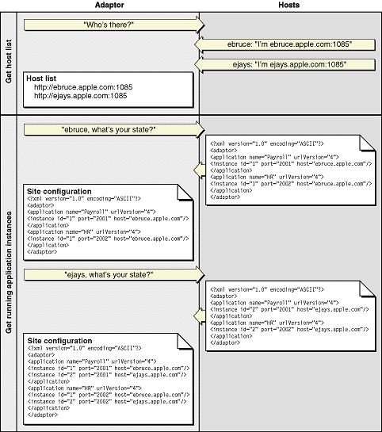
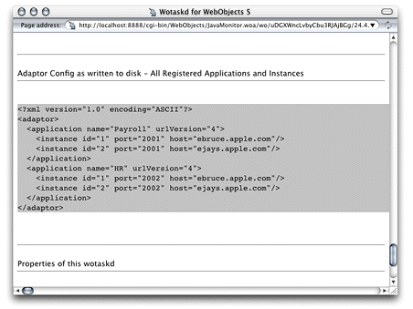
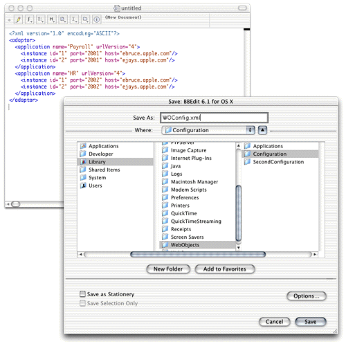

Your site's state is represented by
The HTTP adaptor captures your site's state at regular intervals, which you set when you configure the adaptor. You define the method that the adaptor uses to gather state information by configuring the adaptor itself. For details, see "Overriding Default Configuration Settings".
The adaptor can obtain the state of your site using one of three methods:
The method that requires the least administration on your part is the multicast request. If an application host goes down, the adaptor automatically removes the application instances running on it from its list of active instances. When the host is brought back up, the adaptor adds the instances back to its list. You should use this method if your site has many application hosts. See "Using a Multicast Request" for more information.
The second method, defining a host list for your adaptor,
eliminates the multicast request. Use this method if you do not
want the adaptor to send regular multicast requests out on your
network or if you seldom add or remove application hosts from your
site. This is the method that is active by default. However, the
host list contains only one host, localhost. For
details, see "Using a Defined Host List".
In the third method, using a configuration file, the HTTP adaptor obtains your site's configuration by reading a file. This file can be static or it can be dynamically updated as you configure your site with Monitor. For details, see "Using a Configuration File".
You can write the adaptor configuration file in one of two ways:
When you configure an adaptor to obtain your site's state using a multicast discovery request, the adaptor obtains the list of active application hosts by broadcasting a message to which each computer configured as a WebObjects application host responds. After the adaptor compiles the list of available hosts, it polls each one to obtain its state (the list of running application instances).
There are drawbacks to using the multicast method:
By default, wotaskd does not respond to multicast requests. To be able to use the multicast request method, you must configure wotaskd processes in your application hosts to respond to multicast requests.
To discover available hosts, the adaptor sends a host discovery
request on the multicast channel (a nonrouting IP address and a
port number), which is set to IP address 239.128.14.2 and
port 1085 by default.
The frequency of each multicast request is ten times as long as
the adaptor's configuration refresh interval. For details on how
to change the multicast channel, see "Setting the Multicast Address and Port", "WOPort", "WOMulticastAddress", and "WORespondsToMulticastQuery".
When a wotaskd process starts, it creates a UDP (User Datagram Protocol)
socket that listens to the multicast channel through which it receives
multicast requests.
| Note: If you change the address and port that adaptors use to send multicast requests, you must also change the address and port that wotaskd processes use to receive multicast requests. |
When each wotaskd process receives the multicast request,
it replies with its URL, such as http://host1.site.com:1085.
The adaptor in turn compiles a list of these URLs.
Sending a multicast request on an entire subnet is an expensive procedure. If your available hosts never change, consider using a defined host list instead.
After the HTTP adaptor constructs the host list, it polls each application host on the list for information on the active application instances running on it. Each wotaskd process, in turn, sends its state information using the format in Listing 4-2. Host polling to obtain information on active instances occurs at the interval indicated in the configuration refresh interval setting for the HTTP adaptor. Figure 4-4 illustrates the process used to determine the configuration of the site in Figure 4-3.
Figure 4-4 Dynamic site configuration using multicast request and polling
This method is similar to the one described in "Using a Multicast Request". The only difference is that the HTTP adaptor skips the first part, the multicast request. The host polling process occurs at the interval set in the adaptor's configuration refresh interval setting.
You must explicitly define a host list for each adaptor. See "Setting the Host List" for details on defining the host list for each of the adaptors provided.
Using an HTTP adaptor configuration file is useful when you want to have a static site configuration (one in which application instances are not stopped after they are started) or if you want to use Monitor to configure your site and have the adaptor read your configuration changes immediately. (The adaptor reads the configuration file every 10 seconds to determine which application instances are active.)
This method also provides a way of having more than one configuration of your site available. You can switch among different configurations by placing the appropriate configuration file in the configuration directory.
"The HTTP Adaptor Configuration File" explains how the file is structured and lists the properties that it defines. For instructions on creating the configuration file and configuring the HTTP adaptor to use it, see "Creating the HTTP Adaptor Configuration File".
You can set up the HTTP adaptor to get your site's configuration
by reading an HTTP adaptor configuration file (called WOConfig.xml by
default) in the configuration directory (/Library/WebObjects/Configuration by
default). You should have only one adaptor configuration file per
Web server so that it can perform load balancing effectively. (See "Load Balancing" for details.)
In addition, in a site with multiple Web servers, if two servers
share the configuration file, instead of deploying two sites you
would be deploying the same site twice. Listing 4-1 shows a configuration
file that defines a site with two application hosts (ebruce.apple.com and ejays.apple.com),
each running two application instances, one of the Payroll application
and the other of the HR application.
Listing 4-1 A WebObjects adaptor configuration file
<?xml version="1.0" encoding="ASCII"?>
<adaptor>
<application name="Payroll" urlVersion="4">
<instance id="1" port="2002" host="ebruce.apple.com"/>
<instance id="2" port="2001" host="ejays.apple.com"/>
</application>
<application name="HR" urlVersion="4">
<instance id="1" port="2001" host="ebruce.apple.com"/>
<instance id="2" port="2002" host="ejays.apple.com"/>
</application>
</adaptor>
The HTTP adaptor configuration file provides the HTTP adaptor
with information about your site's registered application instances.
The format of the configuration file is provided in Listing 4-2 (you
can also view it by opening the woadaptor.dtd file,
located in the /Developer/Examples/WebObjects/Source/Adaptors directory).
For information on the properties defined in the configuration file,
consult Table 4-2.
Listing 4-2 Format of the HTTP adaptor configuration file
<?xml version="1.0" encoding="ASCII"?>
<!DOCTYPE WebObjectsAdaptorConfiguration SYSTEM "woadaptor.dtd">
<adaptor>
<application name=STRING
retries=NUMBER
scheduler=["RANDOM"|"ROUNDROBIN"|"LOADAVERAGE"]
dormant=NUMBER
protocol="http"
redir=URL
poolSize=NUMBER
urlVersion=["3"|"4"]
additionalArgs="unspecified"
>
<instance id=NUMBER port=NUMBER host=STRING
sendTimeout=NUMBER
recvTimeout=NUMBER
cnctTimeout=NUMBER
sendBufSize=NUMBER
recvBufSize=NUMBER
additionalArgs="unspecified"
>
</instance>
</application>
</adaptor>
You can define your site's configuration by writing the HTTP adaptor configuration file by hand. However, Monitor provides you with an easy-to-use interface that facilitates that task.
"Deployment Tasks" shows you how to configure your site using Monitor. When you are satisfied with your configuration, you can save your settings into a configuration file by copying and pasting or by telling wotaskd to write the file.
To use the copy-and-paste method, follow these steps:
The host configuration page is displayed in a new Web browser window.
Figure 4-5 Copying the information that makes up the HTTP adaptor configuration file
WOConfig.xml (or
any other name you choose) in the configuration directory.Figure 4-6 Creating and saving the HTTP adaptor configuration file
If instead of copying and pasting you want wotaskd to create the configuration file for you, you can start a wotaskd process specifically to create the file or you can tell wotaskd to continually maintain the configuration file.
To start a wotaskd process specifically to create the file, you must first stop the process that corresponds to the site you configured if it's already running on the Web server computer.
To start a wotaskd process that writes the configuration file to the default location, execute the following two commands using your command shell editor:
cd /System/Library/WebObjects/JavaApplications/wotaskd.woa ./wotaskd -WOPort <port> -WOSavesAdaptorConfiguration true
To specify a different location for the HTTP adaptor configuration file, follow the instructions in "WODeploymentConfigurationDirectory". If you want to give the file a different name, "Setting the HTTP Adaptor Configuration File" shows you how.
To tell wotaskd to maintain the configuration file on a permanent basis, add the following to the WOServices script line that starts the wotaskd process:
-WOSavesAdaptorConfiguration true
When you restart your Web server, the HTTP adaptor configuration file is updated every time you make a change to your site's configuration through Monitor. The changes are picked up by the HTTP adaptor the next time it reads the configuration file.
To configure the HTTP adaptor to read the configuration file instead of using a multicast request or a host list, follow the instructions in "Setting the HTTP Adaptor Configuration File".
© 2001 Apple Computer, Inc. (Last Updated August 25, 2001)